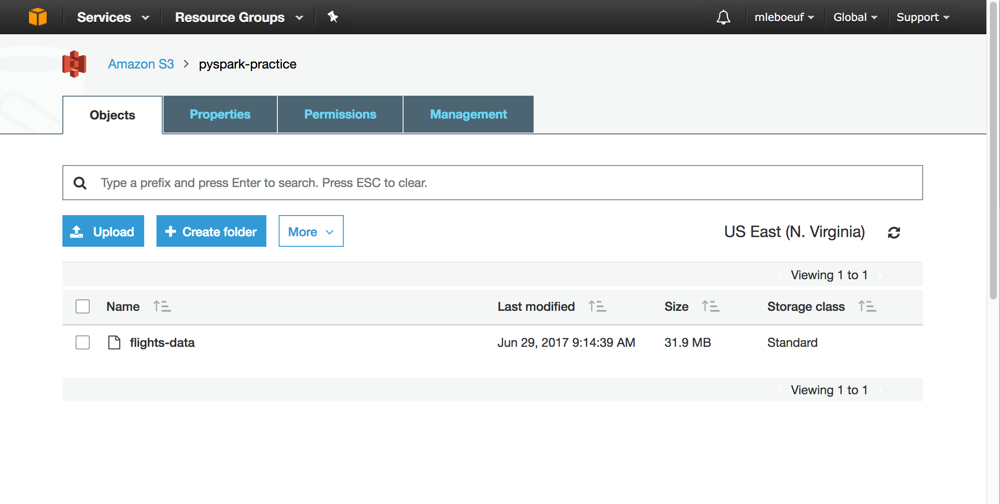
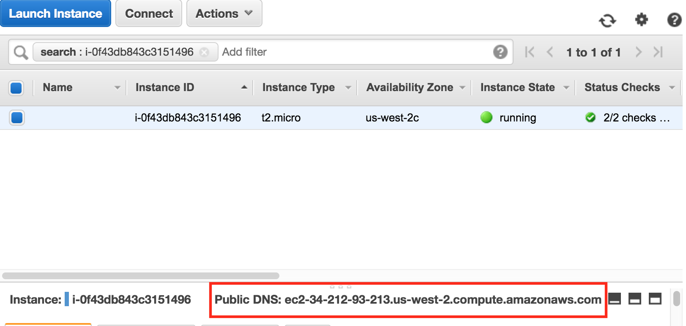
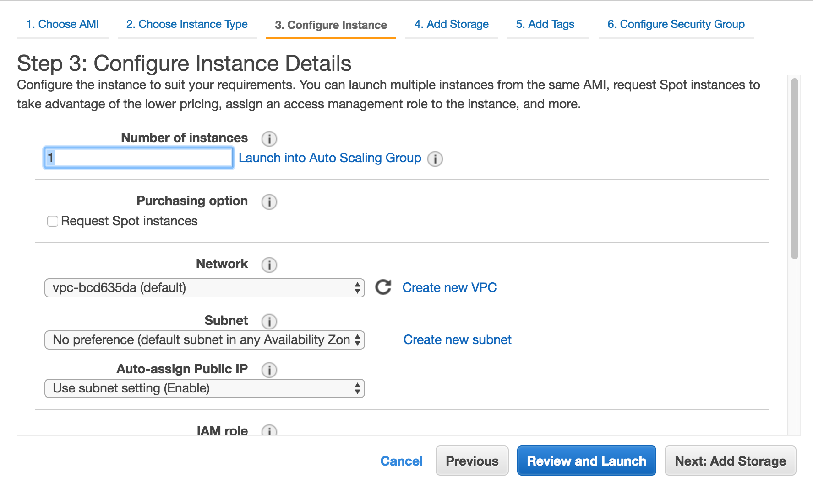
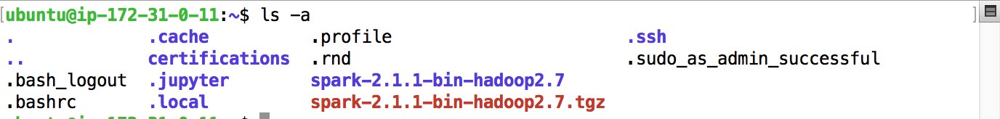
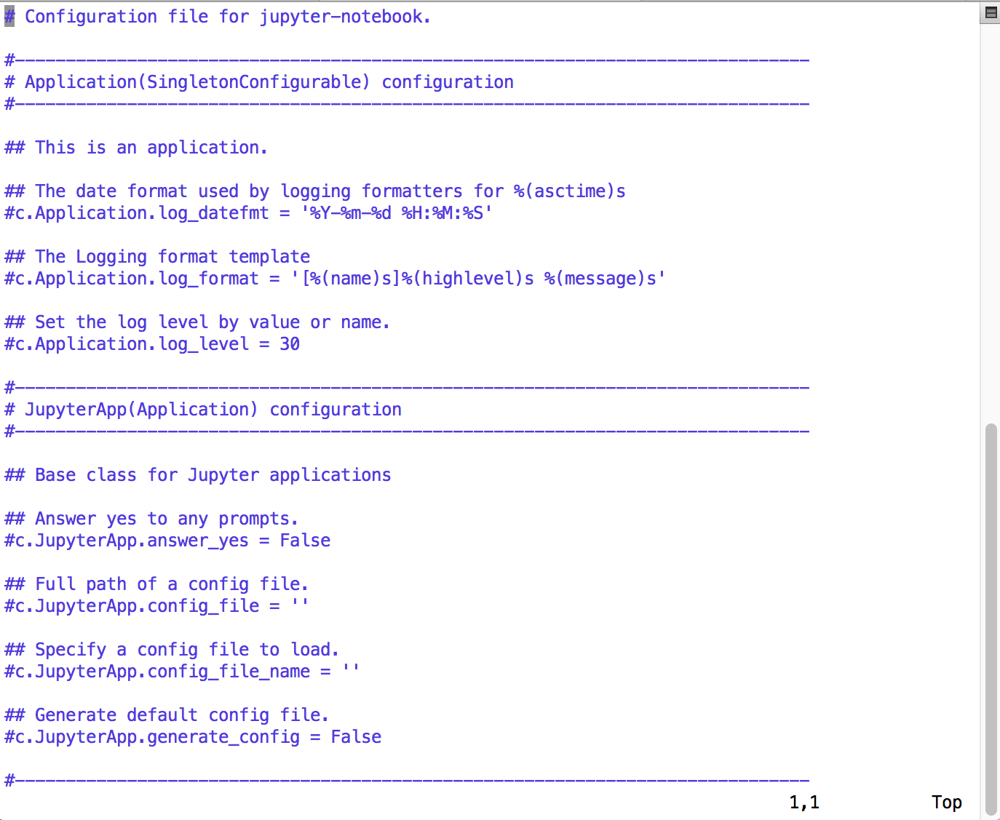
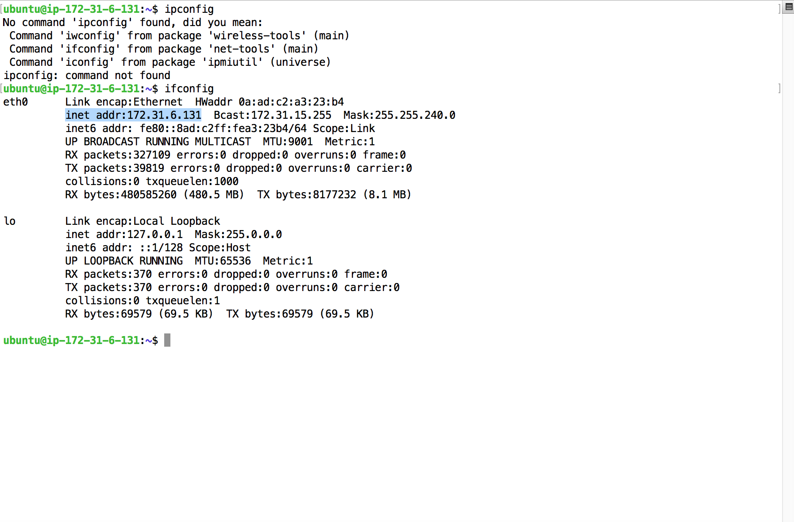
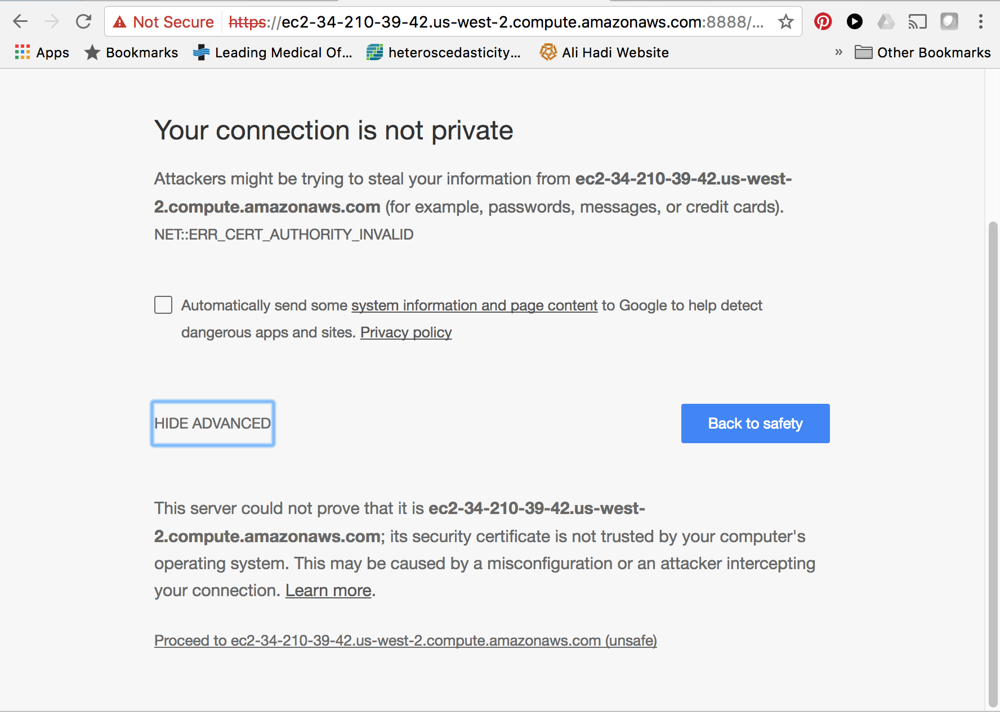

Running Spark locally is a great place to start when initially learning. However, it’s more realistic to and actually using it can be challenging. This post will show you how to set up an Amazon EC2 instance and run Pyspark. We’ll do some analysis on historic flights data to see which carriers tend to be the most delayed.
We’ll approach the set up as if you aren’t the only person working in the environment. It’s very common for a team of data scientists, analysts, and engineers to all share the same AWS environment.
First Create New Group. I typically use the following policies: * arn:aws:iam::aws:policy/AmazonS3FullAccess * arn:aws:iam::aws:policy/AmazonEC2FullAccess
This gives people complete access to both storage and compute.
I’ll add myself as a user. Select programattic access. One person should only have Then you’ll add the user to group, which gives them all of the permissions set at the group level.
As of writing this post (07/01/2017), Amazon changed the way in which keys could be managed.
*1. Create a group *2. Add user to the group *3. Save the Access key ID & Secret Key somewhere safe
Let’s briefly go over the data we’ll be working with before diving into the S3 plumbing. We’ll use the nycflights13::flights dataset, which can be exported from R via:
library(nycflights13)
write.csv(nycflights13::flights,
'flights_df.csv',
row.names = FALSE)
Next we’ll take this data set and store in Amazon S3. For those unfamiliar with S3, it’s a place to store data via key-value pairs in something called a “bucket”. You can create buckets and upload/download files from S3 via an AWS console, but in most real-world situations you’ll want to do these steps programatically. If you don’t have an amazon account, sign-up for one and then create an S3 bucket (I’ve titled mine ‘pyspark.practice’). This bucket will hold the data we’ll eventually access via EC2.
We have our bucket and next we’ll need our security credentials, which include a AWS_ACCESS_KEY_ID and AWS_SECRET_ACCESS_KEY. You’ll need both to programatically access your bucket. If you click your username, go to My Security Credentials, then Access Keys, and you’ll be able to generate and download both keys. Store these in a safe place.
Now that we have our bucket and keys, we will upload the flights data to our S3 bucket via the following Python Script. Note that in this script we’ve hardcoded the keys. This is not good practice, and the keys should be imported via an environmental variable or stored in your profile. However, for the sake of simplicity (and the fact that we aren’t working with sensitive or private data), we’ll include them in the script for the moment.
import boto
import boto.s3
from boto.s3.connection import S3Connection
from boto.s3.key import Key
import sys
# Use this function to keep track of the upload progress
def percent_complete(complete, total):
sys.stdout.write('*')
sys.stdout.flush()
AWS_ACCESS_KEY_ID = '<your access key>'
AWS_SECRET_ACCESS_KEY = '<your secret key>'
conn = boto.connect_s3(AWS_ACCESS_KEY_ID, AWS_SECRET_ACCESS_KEY)
bucket_name = 'pyspark-practice'
# path to where the flights data is stored locally
data_path = 'path/to/flights/data'
# This is where the bucket will be created in S3
my_bucket = conn.create_bucket(bucket_name,
location=boto.s3.connection.Location.DEFAULT)
# Create a key that will be used to Identify the data
k = Key(bucket)
k.key = 'flights-data'
# Upload to S3 bucket
k.set_contents_from_filename(data_path,
cb=percent_complete, num_cb=5)
Just to make sure our data is there, we can use the following to print out all of the keys for files stored within our ‘pyspark-practice’ bucket.
my_bucket = conn.get_bucket(bucket_name)
for file_name in my_bucket.get_all_keys():
print file_name.key

ssh -i <path_to_.pem file> ubuntu@<Public DNS Key>
The Public DNS Key will become available when you launch your EC2 instance. Here’s where you can find it:

Below you would change the 1 to a much larger number in the real-world.

move .pem key to a good location. Then type the following command.
chmod 400 marks_spark_instance.pem
Now lets login to our instance. Take that DNS.
ssh -i marks_spark_instance.pem ubuntu@ec2-35-167-252-227.us-west-2.compute.amazonaws.com
EC2 instance is just a fancy term for ‘a remote computer’.
First let’s install pip
sudo apt-get install python-pip
Then install python3
sudo apt install python3
When it comes to processing lots of data, Spark is quickly becoming the go-to solution. While “lots of data” means very different things to different people, I usually think of it as data that is too large to fit on my computer’s hard drive.
It has APIs in several languages, including Scala, Python, and more recently R, and greatly simplifies the steps required for distributed data processing.
First step is create an EC2 (Elastic Cloud Compute) instance on Amazon Web Services. EC2
sudo apt-get update
installs pip3, which is what we use to install python packages.
sudo apt install python3-pip
we’ll then use pip to install jupyter
pip3 install jupyter
We’ll install Spark
Then install Java.
sudo apt-get install default-jre
It can be helpful know which version of your java is installed on your machine. Use java -version command to find out.
openjdk version "1.8.0_131"
OpenJDK Runtime Environment (build 1.8.0_131-8u131-b11-0ubuntu1.16.04.2-b11)
OpenJDK 64-Bit Server VM (build 25.131-b11, mixed mode)
Install scala next.
sudo apt-get install scala
Install py4j package, which allows python to connect to Java.
pip3 install py4j
Next we’ll download the spark.
wget http://archive.apache.org/dist/spark/spark-2.1.1/spark-2.1.1-bin-hadoop2.7.tgz
Spark-2.1.1 is the most current version as of the time of this post. You can go here to determine if any updates have been made. All you have to do is change the version in the url.
Now we’ll unzip the file via the following command:
sudo tar -zxvf spark-2.1.1-bin-hadoop2.7.tgz
We just installed spark and hadoop. Pretty easy, eh? Lastly we’ll install a super helpful python module called findspark. This module does exactly what it says: it helps python find the location of Spark. While this may seem trivial, it can be pain when you are just getting started to have Spark and Python work together.
pip3 install findspark
And now generate config file
jupyter notebook --generate-config
You should receive the following prompt: Writing default config to: /home/ubuntu/.jupyter/jupyter_notebook_config.py
Next we’re going to create a directory to hold our “certifications” and then change from our main directory into our newly created directory.
mkdir certifications
cd certifications
Create certifications here.
sudo openssl req -x509 -nodes -days 365 -newkey rsa:1024 -keyout mycert.pem -out mycert.pem
Let’s go back to our main directory and list all of the files we have so far.
ls -a
And you should see something similar to below:

We’ll switch into the .jupyter directory and open up a text editor to make some changes to the configuration file.
cd .jupyter
vi jupyter_notebook_config.py
If you are in the text editor you should see a screen like this

You’ll add the following at the top of the configuration file by hitting the ‘i’ key, which allows you to edit the file.
c = get_config()
c.NotebookApp.certfile = u'/home/ubuntu/certs/mycert.pem'
c.NotebookApp.ip = '*'
c.NotebookApp.open_browser = False
c.NotebookApp.port = 8888
Now hit the esc to end the editing process, followed by the ‘shift-colon’ then type ‘wq!’ followed by ‘enter’ to write the changes, quit, and source or execute the file (i.e., wq = write-quit).
Finall go back to the main directory and create a new directory and call it “practice_data”. This is where we’ll store our practice dataset.
cd
mkdir practice_data
In your command line type ‘R’. This will start up R on your local machine, and then we’ll write the nycflights13::flights dataset to the directory where the .pem file is located.
In the terminal, use the following command to move the flights data from your local machine to the remote machine. Here’s how we’ll copy it to our EC2 instance. Note you’ll replace “marks_spark_instance.pem” with the location and name of your key, and you’ll replace “ec2-34-210-39-42.us-west-2.compute.amazonaws.com” with your DNS key.
scp -i /Users/markleboeuf/Desktop/Start/pyspark/marks_spark_instance.pem /Users/markleboeuf/Desktop/Start/pyspark/flights_df.csv ubuntu@ec2-34-210-39-42.us-west-2.compute.amazonaws.com:~/practice_data

Here is the address:
https://localhost:8888/?token=66d92b401e6eeefd0f33ca42ecbf334076ab0e0af8016b7c
Let’s replace “localhost” with our DNS. Here’s what mine looks like.
Copy this address and paste into your browser, and you should see this screen

Start up a jupyter notebook and create a block. This should get your up and running below:
import findspark
spark_v = '2.1.1'
hadoop_v = '2.7'
v_path= "/home/ubuntu/spark-{spark_v}-bin-hadoop{hadoop_v}".format(
spark_v = spark_v,
hadoop_v = hadoop_v)
findspark.init(v_path)
import pyspark
Assuming no error messages with this part, let’s finally get started.
You have can’t a full fledged data-science ecosystem without R, in my highly biased opinion. Here are the steps:
http://amunategui.github.io/EC2-RStudioServer/